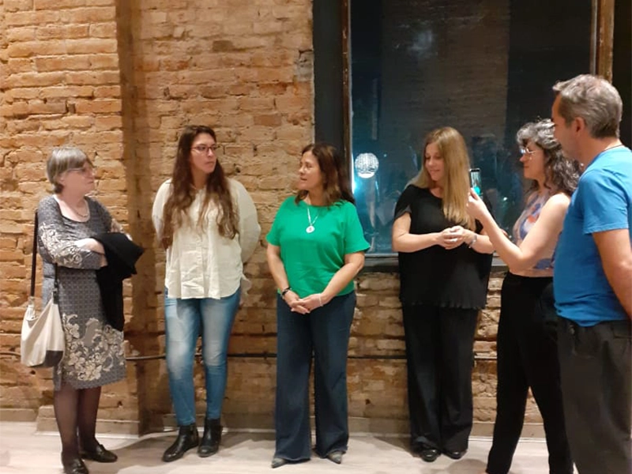

ACTUALIDAD
Semana De Acción Por Los ODS
Un encuentro íntimo con la obra Escorial y sus vinculaciones con los ODS
24 sept 2023
En el marco de la semana de acción por los ODS realizada entre el 24 de Septiembre y el 1 de Octubre del corriente año, organizamos desde la Fundación Vida Sostenida y en alianza con el espacio de arte Nivel 2, la empresa Sermetal y RIPO Tucumán, un encuentro íntimo con la obra Escorial y sus vinculaciones con los ODS, “Arte en economía circular, un canal hacia los ODS”.
Durante la charla pudimos poner en valor las dinámicas colaborativas, la retroalimentación y la reflexión en profundidad sobre las prácticas profesionales, cuales son las oportunidades que tienen cada uno y cómo se potencian cuando el engranaje educativo, productivo y cultural establecen puntos en común.
Es interesante ver los abordajes que propone el arte contemporáneo en relación a la economía circular, ya que establece un circuito novedoso a la producción industrial, donde sus descartes obtienen otras posibilidades, una segunda oportunidad donde ese algo toma otro significado, en la que se exalta su aspecto simbólico y donde las dimensiones de valor se ven enriquecidas.
Y es que todo el aparato socio-económico dentro de este ecosistema que se ve tangencialmente atravesado, genera una participación activa en la construcción de sentido, en la construcción de significaciones que exceden a sus campos de acción, para entablar nuevos vínculos y asociaciones discursivas tanto dentro de la obra, como por fuera de ella.
Eso mismo ocurrió en la charla donde la obra, su lugar de origen, su circulación y el lugar donde es exhibido mantienen un diálogo en tensión, sumando capas de sentido, haciendo más rica la experiencia humana.
Mirá el video del evento en instagram:
https://www.instagram.com/reel/CxwV-v7uJCz/?igshid=MXdvYWlwOWIxcmMyMw%3D%3D